Southern Railway Exmouth Junction concrete lamp posts
Southern Railway produced their concrete at Exmouth Junction Concrete Works from the 1920s to the 1950s. They made concrete bridges, concrete platform fences, concrete sleepers and Concrete lamp posts.
Awesome 1920s Concrete lamp post at Sittingbourn station.
I have been past this so many times without noticing it until recently. It has an ESLA switch on it.
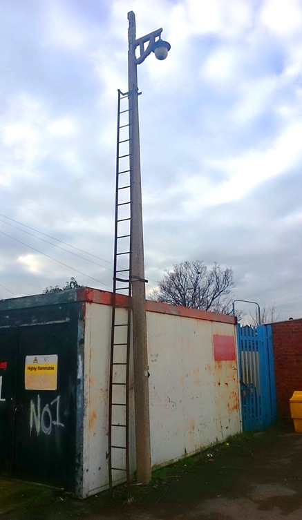
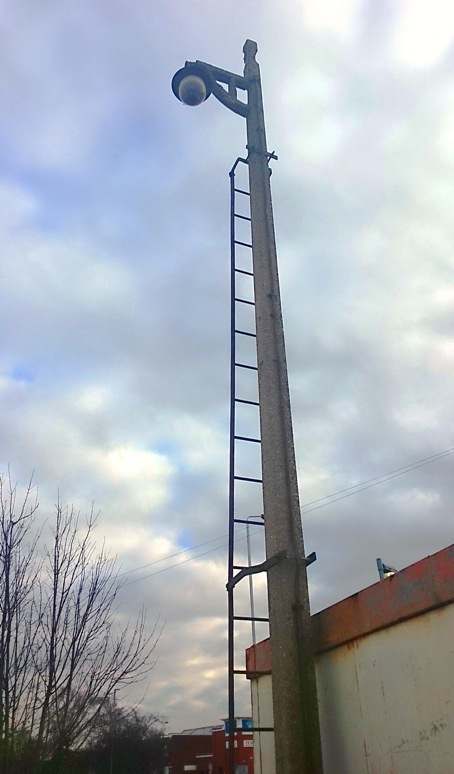
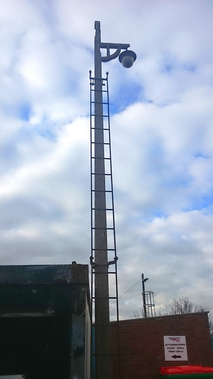
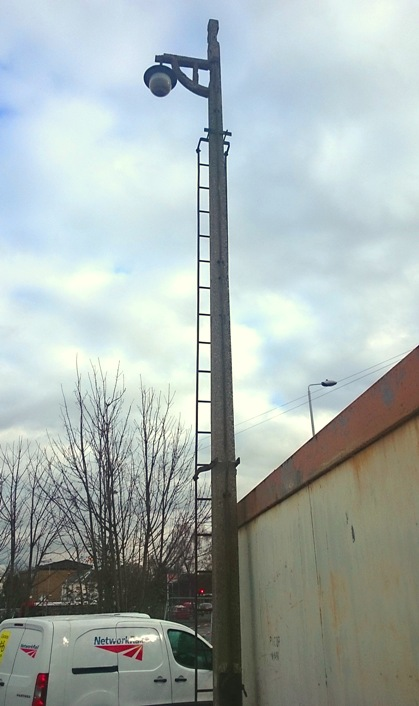
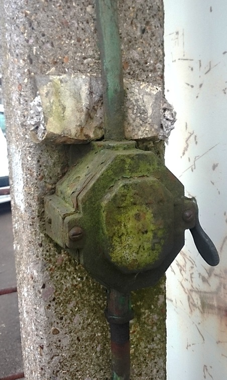
Concrete lamp post at Sandwich station level crossong.
Sadly the lamp has been replaced in the 1980s with a flood light.
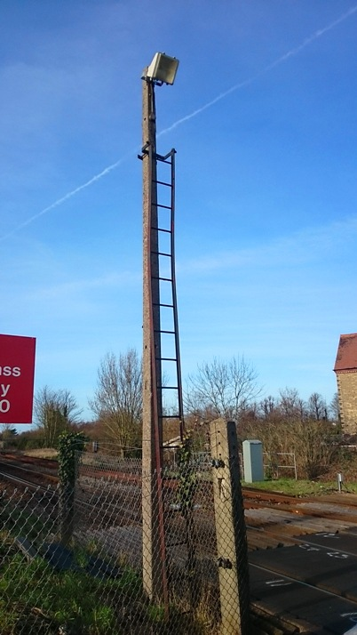
Concrete lamp post at Cuxton station level crossong.
Sadly the lamp has been replaced in the 1980s with a flood light. The concrete fence posts in front are modern ones by ???
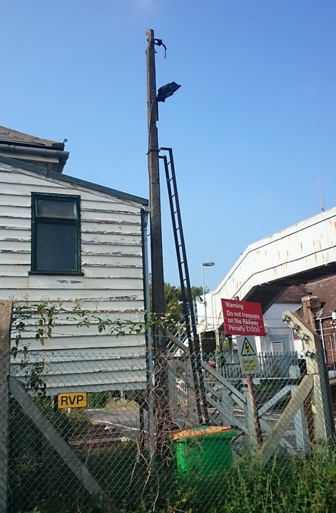
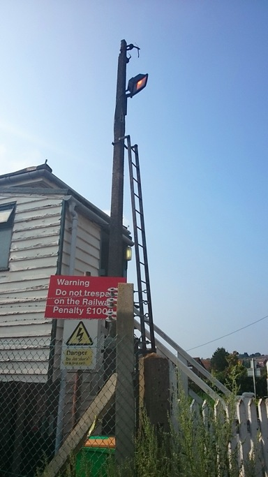
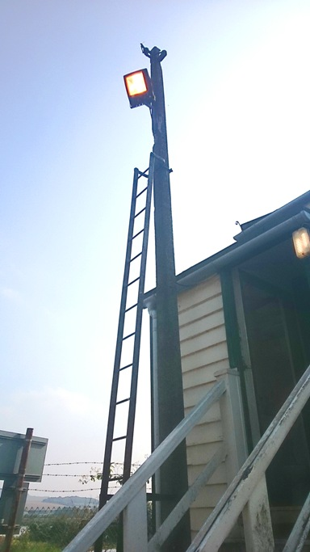
Surviving concrete fence posts from the remains of the Sheppey Light Railway.
The Sheppey Light Railway ran across the Isle of Sheppey from Queenborough to Leysdown. The railway closed in 1950. A few parts of the line remain across the island. In a few places there are some 1900s railings and 1920s concrete fence posts. At one point there are a couple of fence posts right in the middle of a village green! (The only sign that there once used to be a railway there).
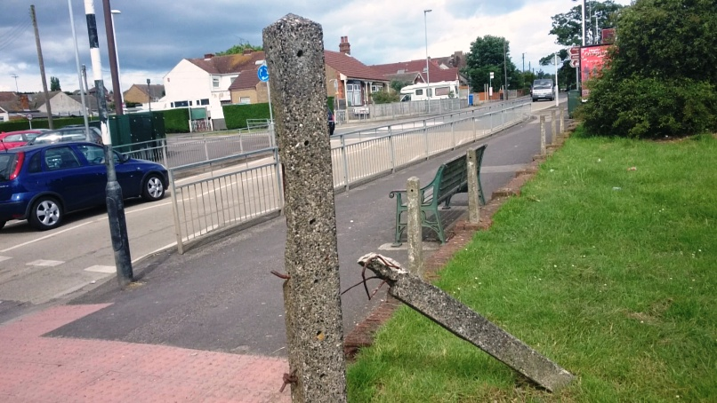
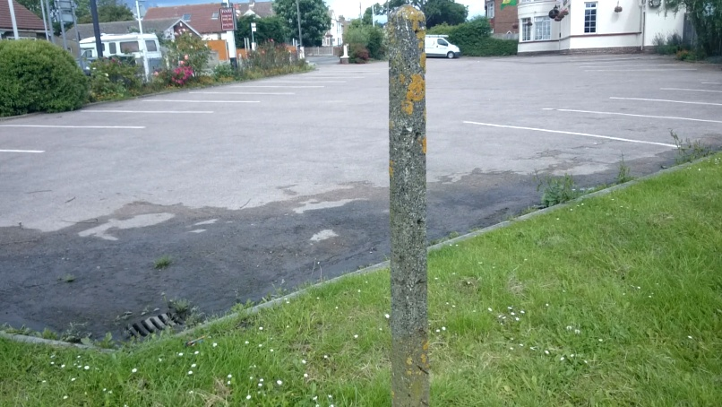
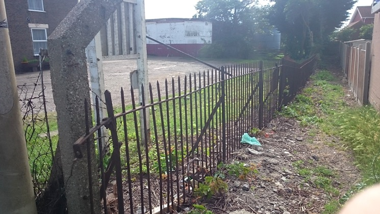
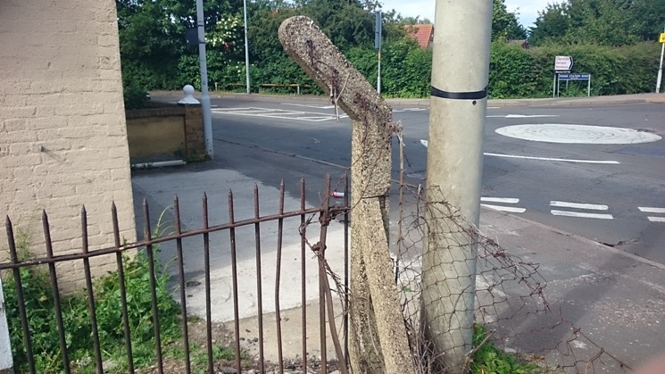
Surviving concrete fence posts from the remains of the Romney/Dungeness railway.
The Romney/Dungeness railway (not to be confused with the Romney, Hythe and Dymchurch Railway) was a branch line that came off from the Ashford - Hastings Turbostar line at Appledore, and went to New Romney. The railway today still exists as far as the nucular power station at Dungeness, and is used to transport nucular waste. The remains of the part of the line that went to new Romney can still be seen today. It runs parallel, about 200 meters north of the Romney, Hythe and Dymchurch Railway. The remains include loads of Southern Railway concrete including a bridge and lots of fence posts.
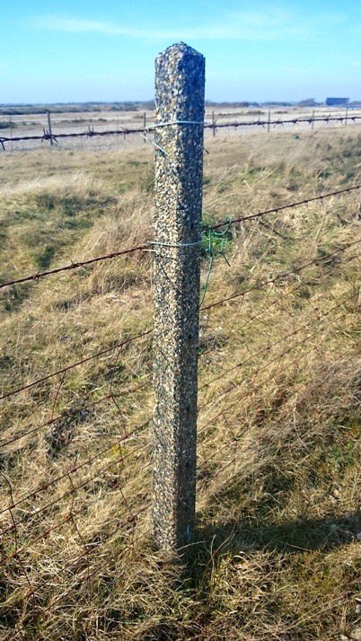
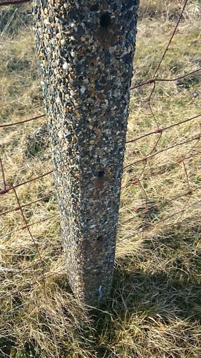
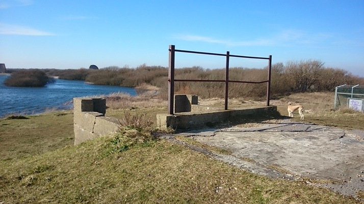
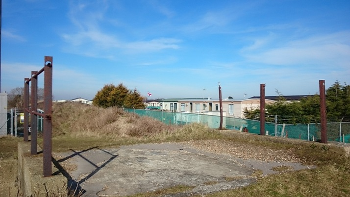
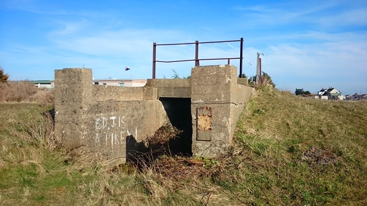
Surviving concrete fixtures on heratage railways.
This is at Sheringham, so has nothing to do with Southern. Often heratage railways have concrete lamp posts. Sadly it is seeming more and more impossible to find out the manufacture which is probably long forgotten.
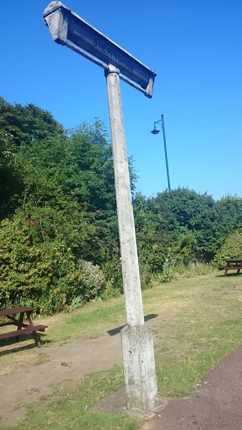
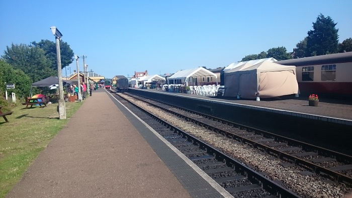
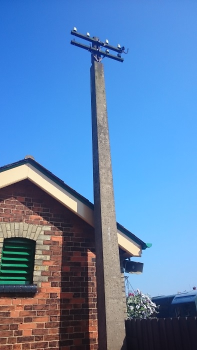
Click here to go to the Beno lamp post guide homepage